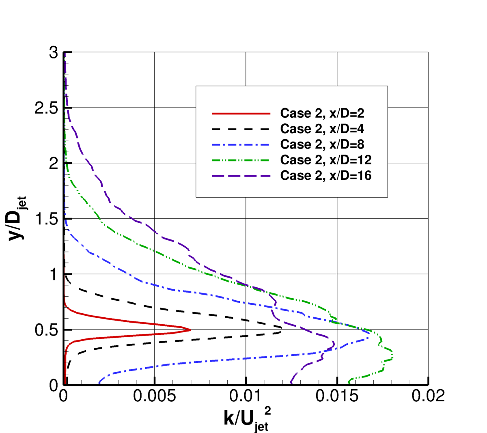

|
Langley Research CenterTurbulence Modeling Resource |
Return to: Turbulence Modeling Resource Home Page
AJM163H: Heated Mach 1.63 Axisymmetric Jet
See the related
Temperature-Matched Mach 1.63 Axisymmetric Jet and
Off-Design Mach 1.63 Axisymmetric Jet cases.
The purpose here is to provide a
validation case for turbulence models. Unlike verification, which seeks to
establish that a model has been implemented correctly, validation compares
CFD results against data in an effort to establish a model's ability to
reproduce physics. A small sequence of nested grids of the same family are
provided here if desired. Data are also provided for comparison. For this
particular supersonic jet case, the data are from experiment.
The experiment involved a supersonic jet issuing from an axisymmetric convergent-divergent nozzle with
an exit diameter, Djet = 2 in. (50.8 mm). The jet exit Mach number for the particular case here is approximately
Mjet=ujet/ajet=1.63. The divergent nozzle contour was designed with the Method of Characteristics to be
yield a nearly shock-free flow in the divergent section of the nozzle and the jet plume.
The nozzle pressure ratio was set to yield a nearly perfectly expanded Mach 1.63 flow at the nozzle exit.
The nozzle's supply plenum was heated such that the jet exit static temperature was 233 K higher than the
ambient static temperature.
In the experiment, the axisymmetric jet exits into quiescent (non-moving) air. However, because flow
into quiescent air is difficult to achieve for some CFD codes, here the CFD is computed with a very low
background ambient conditions (Mref=0.01, moving left-to-right, in the same direction as the jet). This
boundary condition difference has some effect, but testing has indicated that the influence is relatively
small and Mref=0.01 represents a reasonable compromise. The appropriate jet conditions are achieved by
setting total pressure and temperature at the inflow plane to the nozzle, as shown in the figure.
It is important to note that this axisymmetric case is not a planar two-dimensional computation; it
uses a periodic (rotated) grid system with appropriate boundary conditions on the periodic sides of the grid.
This case (referred to as "Case 2") was one of five examined in the 6th AIAA Propulsion Aerodynamics Workshop (PAW6). The related
Temperature-Matched Mach 1.63 Axisymmetric Jet and
Off-Design Mach 1.63 Axisymmetric Jet cases are two of the other
cases considered in PAW6.
The experiment yielded measured velocities as well as turbulence quantities downstream of the jet exit using
PIV. Velocity and turbulence profiles of interest are provided at the centerline (r/Djet = 0), along
the nozzle lipline (r/Djet = 0.5), and at several x-locations in the jet.
There is mean static temperature (T) and RMS of temperature (T') data,
collected with rotationally resolved Raman scattering spectroscopy, along the nozzle centerline and lipline
as well as at several x-locations.
Several RANS and scale resolving analyses were considered and are documented in:
A tar file of the data for all 5 PAW6 cases is in the link below. As mentioned above, this heated Mach 1.63 jet
is listed as "Case 2."
The experimental data references are:

What to Expect:
(Other turbulence model results may be added in the future.)
Return to: Turbulence Modeling Resource Home Page
Recent significant updates: Responsible NASA Official:
Ethan Vogel
The experimental operating conditions are summarized in the following table:
Case Number
Nozzle Geometry Mach No.
Nozzle Operating Mach No.
NPR
Nozzle Tt (K)
Jet delta T (K) = Ts-jet-Tamb
Ujet (m/s)
2
1.63
1.63
4.44
799.4
233
746.6

RESULTS
LINK TO EQUATIONS
MRR Level
SST-Vm
SST-Vm eqns
3
None
Page Curator:
Clark Pederson
Last Updated: 09/06/2024